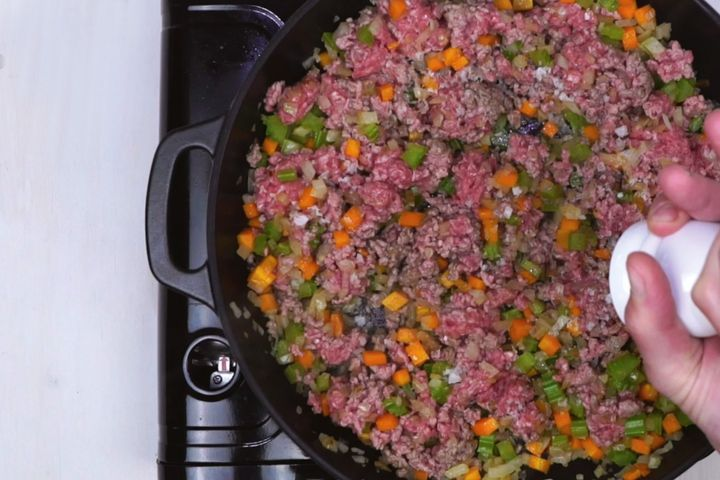
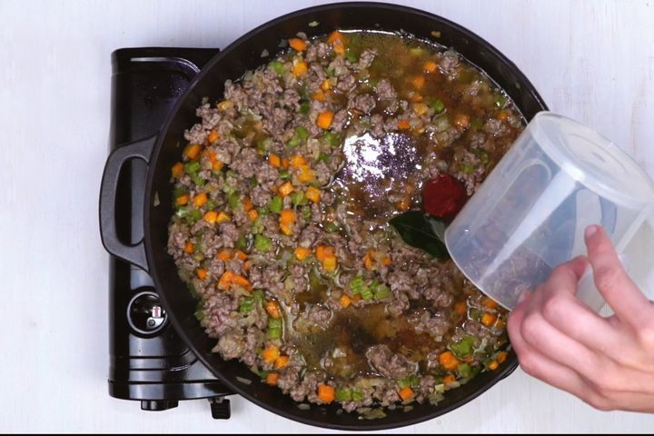
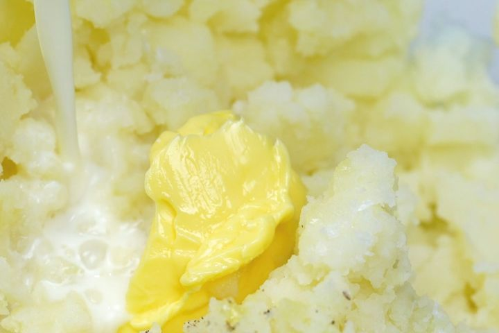
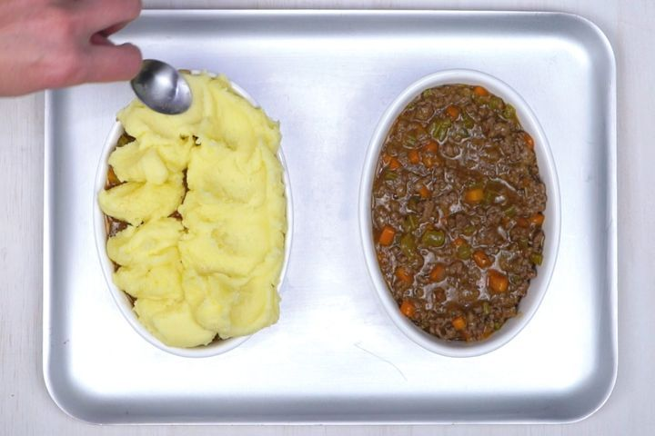

Heat oil in a large saucepan over medium-high heat. Add onion, carrot and celery and cook, stirring, for 5 minutes or until soft. Add lamb mince and cook, stirring to break up any lumps, for 5 minutes or until lamb changes colour.
Add the flour and cook, stirring, for 2 minutes or until combined. Add tomato paste, Worcestershire sauce, bay leaf and stock. Bring to the boil. Reduce heat to low and cook, stirring occasionally, for 30 minutes or until sauce thickens. Taste and season.
Meanwhile: cook potato in a saucepan of salted boiling water for 15 minutes or until tender. Drain well. Return to the pan with the butter. Use a potato masher or fork to mash until smooth. Add milk and use a wooden spoon to stir until combined. Taste and season with salt and pepper.
Preheat oven to 200C. Spoon lamb mixture into a 2L (8-cup) capacity ovenproof baking dish, or use four individual ovenproof serving dishes. Top with mashed potato and use a fork to spread over lamb mixture. Brush with butter. Bake in preheated oven for 20 minutes or until mashed potato is golden brown. Serve immediately
